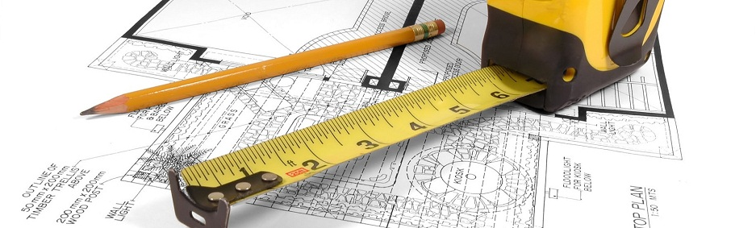

Разработка проектной документации для строительства следующих видов зданий и сооружений I и II уровней ответственности:
- производственные здания и сооружения и их комплексы;
- сельскохозяйственные здания и сооружения и их комплексы;
- жилые здания и их комплексы;
- общественные здания и сооружения и их комплексы,
а также следующих сооружений:
- наружные тепловые, водопроводные и канализационные сети.
Разработка разделов проектной документации:
- строительные решения;
- инженерное оборудование, сети и системы (тепло-, водоснабжения, канализация, отопления, вентиляция и кондиционирования воздуха, электроснабжения, электрооборудования, электроосвещения);
- специальные разделы (организация строительства).
Строительство зданий и сооружений I и II уровней ответственности, а также следующих сооружений:
- разборка и снос зданий;
- земляные работы (механизированная разработка грунта);
- устройство каменных конструкций;
- устройство монолитных и монтаж сборных бетонных и железобетонных конструкций;
- монтаж несущих и ограждающих металлических конструкций;
- монтаж и устройство несущих деревянных конструкций;
- защита строительных конструкций от коррозии;
- наружные штукатурные и облицовочные работы;
- кровельные работы;
- изоляционные работы (гидроизоляционные и теплоизоляционные работы);
- электромонтажные работы (устройство сетей и систем электроснабжения, электроосвещения и электрооборудования);
- санитарно-технические работы (устройство сетей и систем отопления, водоснабжения, канализация, вентиляция, кондиционирования воздуха)
